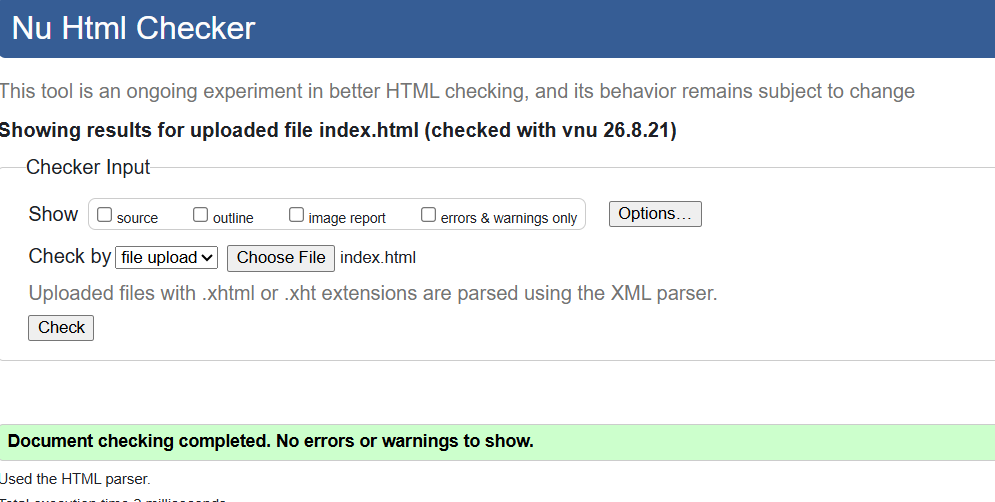
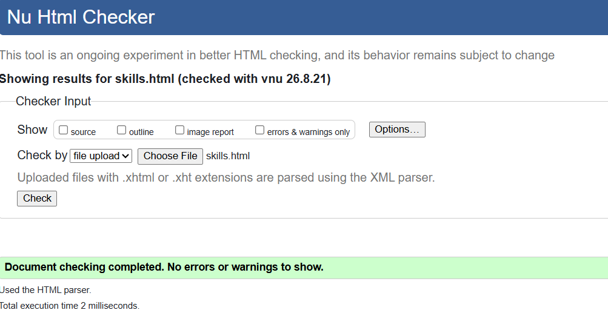
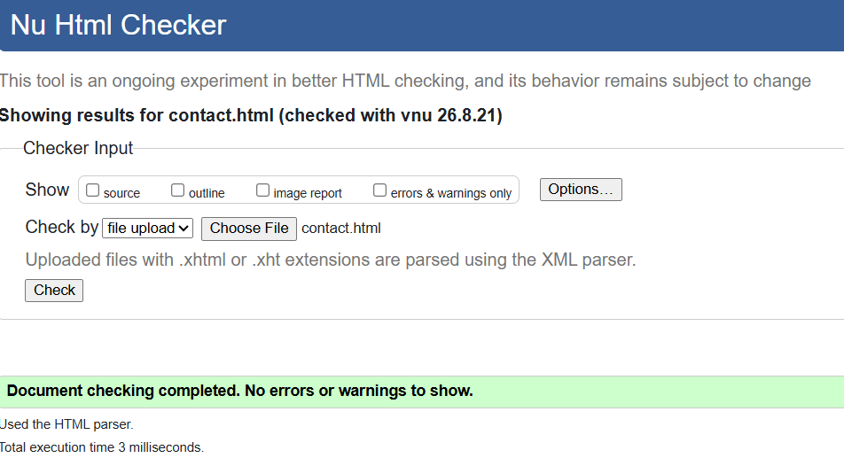
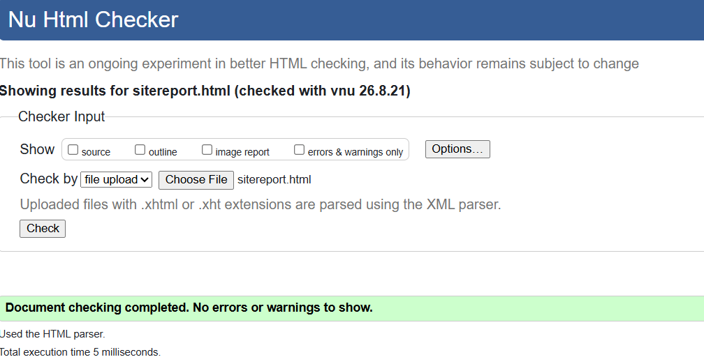
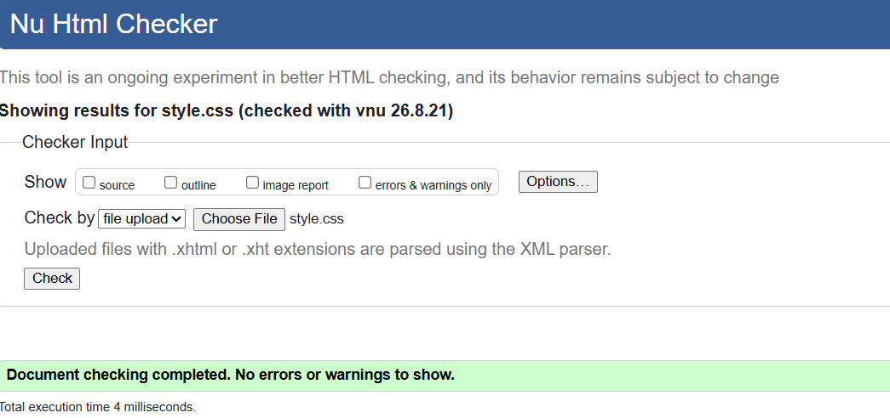

Site Report
My Web Development Experience
Developing this portfolio website has been a useful learning experience. At the beginning of the module, I had a basic understanding of websites, but I needed to improve my knowledge of HTML, CSS and responsive web design. During the development of this website, I learned how HTML provides the structure of a page and how CSS controls the appearance, layout and presentation of the website.
I started the development process by planning the six required pages: Home, Projects, Contact, Skills, Blog and Site Report. I created a consistent navigation menu so that users can move between all pages easily. I also tried to use suitable HTML5 semantic elements such as header, nav, main, section, article and footer.
One of the most important parts of the development process was learning about responsive design. I considered how the website would appear on different screen sizes, especially desktop and mobile devices. I used the viewport meta tag and CSS media queries to help make the layout responsive.
For the design, I aimed for a simple and professional appearance. I selected clear typography and a simple layout because I wanted the content to be easy to read. I also used consistent navigation, spacing and headings throughout the website so that every page feels like part of the same portfolio.
During development, I faced some difficulties. One problem was making the layout work correctly on smaller screens. Another challenge was keeping the navigation links consistent across all pages. I solved these problems by checking my HTML and CSS carefully and testing the pages at different screen sizes.
Debugging was an important part of my learning. Sometimes a missing closing tag or incorrect CSS selector caused unexpected results. By checking my code carefully, I became more confident at finding and correcting these errors.
Overall, this assignment has improved my understanding of basic web development. I learned how planning, coding, designing, testing and debugging work together to create a complete website. In the future, I would like to improve this portfolio by adding JavaScript, more advanced responsive features and interactive functionality.
Validation
HTML and CSS validation screenshots will be included below after validating the website.
HTML Validation Screenshot




CSS Validation Screenshot

Video Demonstration
YouTube video demonstration: Watch my website demonstration